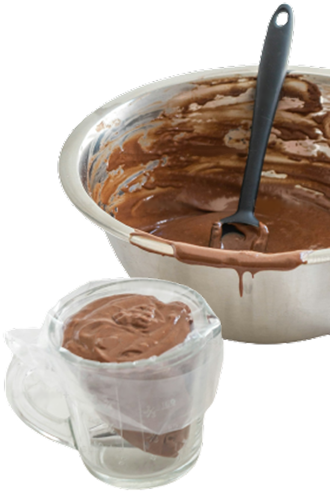

Na Candy Moon, acreditamos que a vida fica mais leve , e mais doce, com chocolate de verdade.
Somos uma doceria artesanal localizada em São Vicente, no litoral de São Paulo, dedicada a transformar o melhor do chocolate em momentos inesquecíveis. De trufas recheadas a brownies intensos, nossos produtos são feitos com ingredientes de alta qualidade, técnicas caseiras e muito carinho.
Nosso diferencial está no uso do chocolate como protagonista: trabalhamos com diferentes tipos, do ao leite ao amargo, combinando texturas, recheios e apresentações que encantam todos os sentidos.
Cada doce que sai da nossa cozinha carrega mais do que sabor, carrega afeto, cuidado e a vontade de fazer parte dos seus melhores momentos.
Seja para presentear, comemorar ou se presentear, ou simplesmente naquela vontade de adoçar o dia.
Na Candy Moon o chocolate é levado a sério. Porque acreditamos que um bom doce pode transformar qualuqer momento em algo especial.
